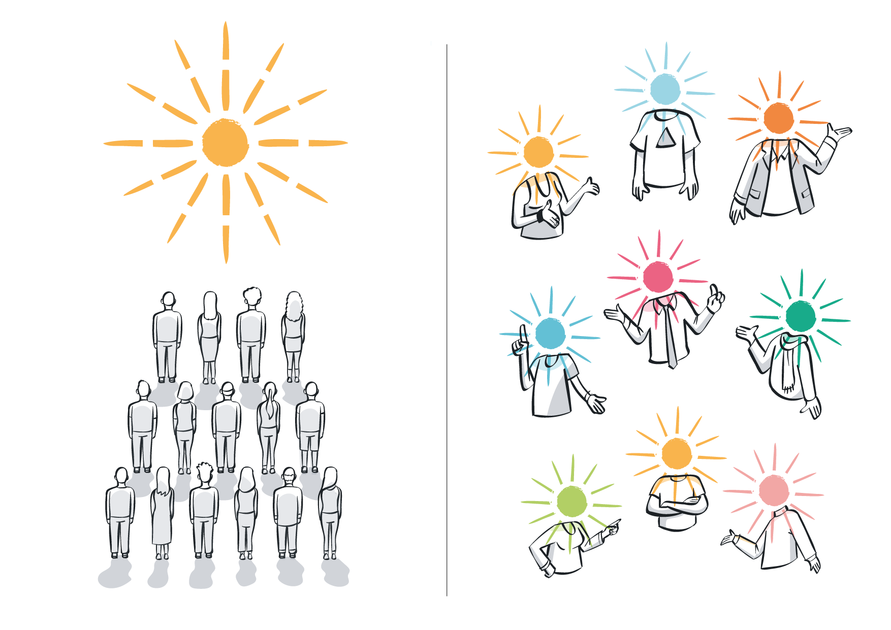

Introduction to Metaethics¶
What is practical ethics?¶
Practical ethics is a branch of philosophy, in particular a branch of ethics concerned with examining the aims and principles of moral behaviour and applying them to various problems of our everyday lives or real-world scenarios in general.[@uehiro]
In this course, we will look at issues in practical ethics which arise from our use of AI systems and the prevalence of data in our lives. It is important to note that these harms are not exclusive to the use of AI systems, but can be characteristic of them. To do so, we will introduce some key concepts in metaethics and some of the most relevant ethical theories in use today.
What is Metaethics?¶
Metaethics, as its name suggest, attempts to understand the various aspects (ontological, epistemological, semantic, and psychological) that make up the presuppositions and commitments of moral thought, talk and practice.[@sep-metaethics2014]
What does this mean? Metaethics deals with a variety of quite complex, yet relevant questions such as the following:
- Is there anything such an objective moral truth? Or is morality more a matter of taste?
- Are all cultural moral standards equally valid or true?
- Are there moral facts? And if they exist, what is their origin?
- How are moral facts (if they exist) related to other kinds of facts about our world?[@sep-metaethics2014]
Clearly, none of these questions will have straightforward or easy answers, and we will not be dealing with them extensively in this course. However, in this brief introduction to practical ethics, we will look at different ways that some of these questions have been tried to answer.
Quote
What is morality? Are there moral facts about the world? If there are, can we know them? If there are not, how do we decide on right and wrong in our actions?
1. Universalist Perspectives¶
1.1 Moral realism¶
Moral realists, roughly speaking, accept the following two statements:
- There are such things as moral facts or properties, and;
- These are independent of human attitudes towards them (this is called attitude independence).
In practice, this means that moral realists believe that objective moral facts do exist, and there is only one "set" of these facts. Objective moral truths also imply that things like subjectivity, or culture are not relevant when evaluating whether an act is good or bad. Moral realism is, in and of itself, neutral on what it is exactly that makes something good or bad; it just is prepared to state that moral facts exist.
Of course, this does not mean that subjectivity or culture play no role in what people think is good or bad. However, the moral realist is prepared to say that those differences, and any human attitude over what makes something good or bad, is irrelevant when evaluating moral facts. That is, the reason why some things are good or bad do not hinge on whether people, culture, or society evaluate them as good or bad.
The existence of objective moral truths clearly begs the question: where do these facts come from? This is what is known as the 'grounding problem'.
One way of summing up moral realism is to say that epistemically they believe that "there are moral facts, in the same way that there are planets and spoons".[@rachels2019]
1.2 Procedular ethics¶
In procedural ethics, moral validity is bound by practices of giving and asking for reasons. In this way, a moral claim that is justified is one that can convince someone else by the “unforced force” of the better argument.
Legitimate moral decision-making thus requires persuasion through rational justification and compelling argumentation. This means that procedular ethics begins by trying to reconstruct the requirements for rationality. These requirements include assuming an impartial perspective, which considers the interests of all affected by an action equally, and making universalizable moral judgements that are applicable in all like situations.
Does this mean that procedural ethicists believe that moral facts exist? Yes and no. While processes of rational justification are supposed to yield a basis for valid moral claims, many procedural ethicists abstain from making substantive claims about moral reality. In their view, the proper role of moral theory is not to posit the fixed, and mind- or language-independent moral values and properties of the universe, but rather to facilitate and to normatively justify the continuation of ongoing rational dialogue.

2. Non-universalist Perspectives¶
2.1 Cultural Relativism¶
Cultural Relativism says, in effect, that there is no such thing as universal truth in ethics; there are only the various cultural codes that derive from social approval, and nothing more. Cultural relativism challenges our belief in the objectivity and universality of moral truth.[@rachels2019]
Values and moral beliefs form an interconnected and coherent whole in a given cultural field or system of meanings, but this symbolic whole is relative to the historical background of the group it is derived from.
There are no objective moral standards that go beyond the locality of cultures, and hence, no universal standards that could help adjudicate between them.
Some examples of claims made by cultural relativists are:
- Different societies have different moral codes, and the moral code of a society determines what is right within that society.
- There is no objective standard that can be used to judge one society’s code as better than another’s. There are no moral truths that hold for all people at all times.
- The moral code of our own society has no special status.
- It is arrogant for us to judge other cultures. We should always be tolerant of them.
2.2 Moral Subjectivism¶
Moral subjectivists take relativism to a next level; instead of basing it on codes shared by whole cultures, they believe morality is an inherently individual matter. That is, what is morally right to do is up to the individual’s desires, wants, tastes, or preferences.
Therefore, in this view, moral language is not fact-stating language and thus does not contain mind-independent ethical truths. Instead, moral judgments are subjective expressions of feelings or attitudes, and so more like judgments of taste than statements of fact or rational justifications.